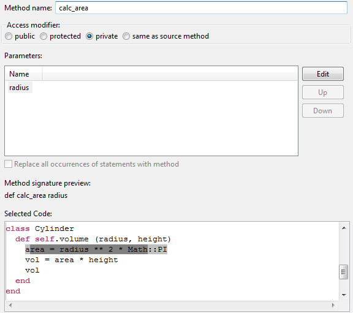

Options

The Extract Method refactoring provides a lot of configuration possibilities.| Option | Description |
|---|---|
| Method Name | Here the name of the new method can be entered. This field cannot be left empty. |
| Access modifier | |
| Parameters |
All parameters of the method are listed here. With the buttons on the right the parameter list can
be edited:
|
| Replace all occurences | Not implemented yet - It is inteded to be able to replace all occurences of the seleced code and replacing it with the same method call. |
| Method signature preview | Provides a preview of the signature the new method will have. |
| Selected Code | Your selection does not need to be very precise, the refactoring expands it automatically if it is not complete. The users selection can be seen in dark grey and the code that will be affected finally is marked with light grey. |